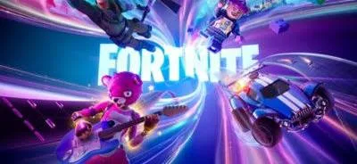

.jpeg)
.jpeg)
.jpeg)
.jpeg)
| juego | Porque razon me gustan | imagen del juego |
|---|---|---|
| Fortnite> | la razon que me gusta el fortnite es por el uso de armas que tiene bastantes y variadas personalmente me gusta la escopeta porque si se tiene buena putenria y precision se podra lograr hacwe kills con esa arma otro punto seria la movilidad me gusta mucho esa mecanica el deslizamiento porque puedes hacerlo en caso que estas heridos o puede salvarte y por ultimo las colaoraciones estan todos lmis personajes favoritos en un mismo juego y a veces epic le echa mucho presupuesto a las colabs y hay veces que traen tematicas de la colaboracion por eso llevo jugandolo 10 años y aun lo sigo jugando por sus mecanicas aun me gustan y es multiplataforma se podra jugar en cualquier lado si tiene buen rendimiento |  |
| PVZ GARDEN WARFARE 2 | lo que me gusto del juego son las selecciones de personajes la cual cada uno tiene una habilidad diferente y sus variantes tiene una habilidad diferente ya que cada uno tiene un rol son unicas las variantes y perosnajes cada uno cumple su rol y me encanto porque es una parodia a call of duty en vez de balas son verduras y mas que todo la imginacion de los desarrolladores y as habilidades cada uno tiene diferente para mi el mejor juego shooter que he jugado lo bueno es de multiplataforma en casi cualquier se puede jugar dato curioso este juego lo hicieron 3 años despues de la anterior entrega | |
| angry birds | Me gusta la mecánica de lanzar pájaros y que cada uno tenga su propio poder o habilidad. También me gustan los diseños sencillos, pero agradables a la vista, ya que hacen que el juego sea fácil de entender y jugar. Además, me parece interesante que el jugador tenga que pensar qué pájaro utilizar en cada situación para poder destruir a los cerdos de la manera más efectiva. También considero que la combinación de los diferentes pájaros y sus habilidades hace que el juego sea más entretenido, porque no se trata solamente de lanzar los pájaros sin pensar, sino de elegir cuál puede funcionar mejor dependiendo de cómo estén colocados los cerdos y las estructuras. Esto hace que cada nivel tenga un pequeño reto y que el jugador tenga que pensar antes de realizar el lanzamiento. | |
| god of war | Me gusta mucho la saga griega de God of War me gusta por la historia y la forma en la que presenta la mitología griega. Me parece interesante cómo el juego toma personajes y criaturas de la mitología y los adapta a su propia historia, haciendo que las aventuras de Kratos sean mucho más emocionantes. También me gustan los combates, porque son rápidos y tienen diferentes armas y habilidades que permiten enfrentarse de distintas maneras a los enemigos. | |
| Half life | Me gusta mucho la saga de Half-Life, principalmente por la forma en la que combina una historia interesante con una jugabilidad de acción y exploración. Me parece interesante cómo el juego nos pone en el papel de Gordon Freeman, un científico que se ve involucrado en una situación inesperada después de un experimento que sale mal. A partir de ese momenento lo que mas me gusto fue su jugailidad es dintinto a cualquier shooter generico este tiene qu tener mas punteria porque en el juego no te dara para apuntar te enseñara mas apunta por tu cuenta ojala puedan remake a este maravilloso juego es hermoso y mas sus desarrolladores son valve los mejores que tratan excelente al usuario o cliente buenas reseñas muy buena compañia | |